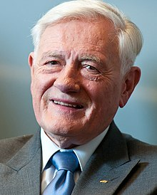
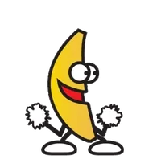

Valdas Adamkus
Lietuvos Prezidentas
Biografija
Gimė
1926 m. lapkričio 3 d.
Sutuoktinė
Alma Adamkienė
Ėjo pareigas
1998 - 2003
Tapo prezidentu antra karta po Paksiuko pašalinimi is posto.
2004 - 2009
JAV
Gyvendamas JAV,
dalyvavo lietuvių išeivijos visuomeninėje ir politinėje veikloje,
rengė protesto akcijas prieš Lietuvos okupaciją,
organizavo įvairias peticijas,
kurios būdavo įteikiamos ir aukščiausių pareigų JAV federalinės valdžios politikams.
1958 m. išeivių jaunimo organizacijų vardu išsiuntė protesto telegramą į Vatikaną,
pasisakančią prieš popiežiaus Jono XXIII sprendimą uždaryti Lietuvos pasiuntinybę Vatikane.
Nuo 1972 m. kasmet, kartais keletą kartų per metus, atvykdavo į Lietuvą.
Čia bendravo su vietinės inteligentijos atstovais,
domėjosi gamtos apsaugos problemomis okupuotoje Lietuvoje,
atgabendavo aplinkos apsaugos bei Sovietų Sąjungoje buvusios nelegalios išeivijos literatūros,
taip pat galėjo aplankyti savo ir savo žmonos šeimų narius.
1998 m. išrinktas Lietuvos Respublikos Prezidentu.
Antrame rinkimų ture nugalėjo buvusį Generalinį prokurorą Artūrą Paulauską.
Prezidento pareigas pradėjo eiti 1998 m. vasario mėn. 26 d.
Iškėlė spartaus šalies modernizavimo idėją ir Lietuvos piliečiams įsipareigojo siekti trijų pagrindinių tikslų:
laisvo žmogaus, atviros visuomenės, stiprios valstybės
